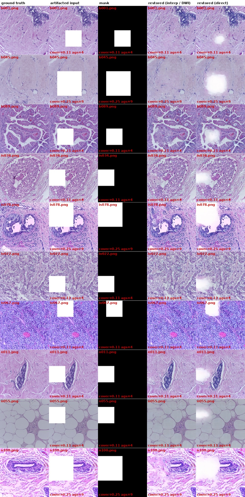
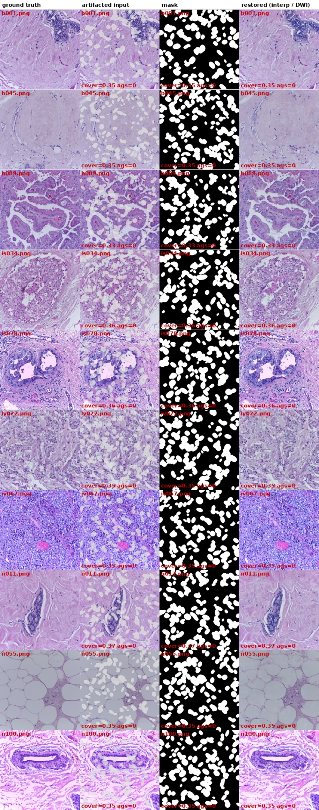

REPRODUCTION RECORD / ICIAR2018 BACH
能跑通，
但还不能贴表。
官方权重、真 UNI 与 CONCH 编码器、50 步推理全部跑通，DWI 稳定优于 direct。但测试集只有 10 张、1536² 裁切、纯合成伪影，规模是论文 BACH 设定的约 1/8，指标只能说明方向一致，不能当作数值复现。
单机可复核n=10 × 2 组伪影推理约 4–5 分钟/图
论文Patch-to-Global: Random Patch Diffusion for Globally Consistent Megapixel Artifact Inpainting in Whole Slide Images
复现对象官方 Drive 发布的 BACH
last.ckpt（1.88 GB）+ 上游 commit 463442d数据ICIAR2018 BACH 400 张 tif，均匀抽 10 张，中心裁 1536×1536
本页定位只有实测数字与可复核路径；方法讲解见精读页
01
数据与伪影怎么造
干净图来自 BACH 的四类（Benign / InSitu / Invasive / Normal），按文件名排序后均匀抽 10 张，保证四类都出现，再中心裁成 1536² 方形。每张干净图造三件套：gt_images/ 原图、art_images/ 带伪影、masks/ 255 表示被覆盖区域。
伪影沿用上游自带的 img_manip.add_bubbles()，参数按图宽缩放：气泡数 400×scale、最大宽度 1000×scale、alpha 0.75、灰白 (225,225,225)、边缘 2 px 暗描边，掩码再膨胀 10 px。另一组 blocks 在 256 对齐的网格上糊一块纯白不透明矩形——它不是真实伪影的模拟，唯一用途是把 256 图块覆盖率顶到 100%，逼出 AGS 门控。
| 操作 | 设定 | 为什么这么设 |
|---|---|---|
| 抽样 | 按名排序后 linspace 取 10 | 避免只落在同一类子目录 |
| 裁剪 | 中心 1536²，不缩放 | 兼顾显存与 patch 数量；不引入插值 |
| 种子 | 1000 + 序号，逐图固定 | 同种子可逐字节复现同一张伪影图 |
| 掩码外回填 | np.where(mask==0, gt, art) | 保证改动只在伪影区内 |
| 记录 | mask 覆盖率 + 触发 AGS 的图块数 | 后者决定条件分支是否真的启用 |
02
推理与打分怎么设
推理走上游 inference_large_image.py，50 步、eta=1.0，条件编码器用真 UNI ViT-L 权重（再分发版，342 个 key 核验、pos_embed 1×197×1024）。interp 对应论文的 DWI（距离加权插值条件），direct 直接用邻近图块的 embedding。
上游有一处必须修：inference_large_image.py 原写 eta = args["sampling_steps"]，会把 DDIM 噪声放大 50 倍，已改为读取 args["eta"]。
AGS 门控（逐图块）：sₜ = s_base，当 r_patch > 0.99；否则 sₜ = 0
s_base 由周边健康区 Laplacian 方差映射到 [2, 7]；r_patch 是该图块的伪影占比
s_base 由周边健康区 Laplacian 方差映射到 [2, 7]；r_patch 是该图块的伪影占比
| 指标 | 实现 | 口径提醒 |
|---|---|---|
| LPIPS（全图） | AlexNet，spatial=True | 与论文的 mask 内 LPIPS 不可混用 |
| LPIPS_M（mask 内） | 按 mask 加权 | 与论文 Table 1 对齐的候选口径 |
| EmbSim / FID_U | UNI ViT-L 特征 | 先做的替代方案，不能与论文 FID_C 比 |
| EmbSim / FID_C | CONCH ViT-B/16 特征 | 论文同编码器；FID 取未归一化原始特征 |
FID 必须注明归一化：同一批图 CONCH 原始特征 34.28、L2 归一化后 0.0668，差 3 个数量级。论文的 44.37 是未归一化口径。
03
论文怎么做的
训练用 256×256、20× 的 patch，只从 GrandQC 判定的无伪影区取；TCGA-BRCA、Camelyon16、BACH 各自训一套模型，不是单一权重跨数据集。推理在 512–4608 px 区域上随机采样图块、逐块去噪再拼回大图。
伪影来源同样是自己合成的：01_artifact_data_generation.ipynb 标题就是 “Fake Artifact Image & Mask Synthesis”，对 4096² 的 TCGA 图块调用同一个 add_bubbles()，scale = 1。下游实验另外用 pyvips 把伪影图与修复图插回 WSI 再做分类。
| 环节 | 论文设定 |
|---|---|
| 训练 patch | 256×256、20×，只取 GrandQC 判无伪影区 |
| 条件 | DWI：邻域有效图块的 PFM 特征按距离 ^−α 加权（α=2，δ=1e-6，τ=0.3） |
| 门控 | AGS：r_patch > 0.99 才施加条件引导，s_base ∈ [2,7] |
| 伪影 | 合成（failure modes / 气泡），4096² 图块 |
| Table 1（BACH） | LPIPS_M 0.4418 · FID_C 44.37 · Emb Sim 0.9201（CONCH） |
| 下游 | Camelyon16 MIL 与 BACH 分类（Table 2 / 3） |
04
逐项对照
| 维度 | 本页复现 | 论文 | 影响 |
|---|---|---|---|
| 数据集 | BACH 抽 10 张 | BACH + TCGA-BRCA + Camelyon16，各自训练 | 数值不可直接比 |
| 图尺寸 | 中心裁 1536² | 4096² level-0 图块 / 原生 WSI | 覆盖率与图块数不同 |
| 伪影 | add_bubbles（scale≈0.375）+ 纯白矩形 | add_bubbles（scale=1）+ failure modes | 同为合成，分布未对齐 |
| 模型 | 官方 BACH ckpt | 每数据集单独训练 | 一致（用发布权重） |
| 条件编码器 | UNI ViT-L | 报告口径为 CONCH | 嵌入空间不同，影响纹理统计 |
| 步数 / eta | 50 步，eta=1.0（修了原 bug） | 50 步（README 示例） | 一致 |
| AGS / DWI | 原样运行 | k=0.99、α=2、s∈[2,7] | 一致 |
| 测试规模 | 10 张 / 组 | BACH 每类 20 共 80 张（据交接笔记，待回原文核实） | 规模约 1/8 |
| 下游任务 | 未做 | MIL + 分类（Table 2/3） | 缺临床有效性证据 |
| 基线 | 未跑 | LaMa / SDM / CoordFill + 两组消融 | 无横向对照 |
05
结果与读法
| 集合 | 方法 | LPIPS↓ | LPIPS_M↓ | EmbSim·UNI↑ | EmbSim·CONCH↑ | FID_C↓ |
|---|---|---|---|---|---|---|
| 气泡 | interp (DWI) | 0.1859 | 0.3517 | 0.9950 | 0.9646 | 34.28 |
| 整块遮挡 | interp (DWI) | 0.1186 | 0.4678 | 0.9975 | 0.9753 | 24.20 |
| 整块遮挡 | direct | 0.1535 | 0.6798 | 0.9651 | 0.9596 | 40.41 |
| 论文 BACH | RestorePath | — | 0.4418 | — | 0.9201 | 44.37 |
和论文比要挑 LPIPS_M。论文 Table 1 报的是 mask 内 LPIPS（README 表头简写成 LPIPS），拿全图 LPIPS 去比会得出“差 3 倍”的错误结论。这个命名歧义需要回原文核对，本页按 LPIPS_M 记录。
气泡组上 interp 与 direct 等价。10 张图的 256 图块没有一个覆盖率超过 0.99，AGS 从未启用条件分支，两条路径数值上等价（此前验证过输出逐字节相同）。DWI 的效应只能在整块遮挡上观察。
EmbSim 不能混口径。论文 0.9201 是 CONCH 特征；表中 UNI 列（0.995 级）偏高，只能与自己纵向比。


06
逐图清单
所有图 1536×1536；gt_images / art_images / restored_* 为 RGB，masks 为 8-bit 灰度。产物根目录 /data1/kxchen/data/bach_test/，与页面同名的完整 Markdown 报告是同目录下的 REPORT.md。
气泡组（10 张，AGS 全部未触发）
| 文件 | 类别 | 种子 | mask 覆盖率 | AGS 图块数 |
|---|---|---|---|---|
| b001.png | Benign | 1000 | 0.353 | 0 |
| b045.png | Benign | 1001 | 0.349 | 0 |
| b089.png | Benign | 1002 | 0.328 | 0 |
| is034.png | InSitu | 1003 | 0.356 | 0 |
| is078.png | InSitu | 1004 | 0.356 | 0 |
| iv022.png | Invasive | 1005 | 0.346 | 0 |
| iv067.png | Invasive | 1006 | 0.348 | 0 |
| n011.png | Normal | 1007 | 0.366 | 0 |
| n055.png | Normal | 1008 | 0.345 | 0 |
| n100.png | Normal | 1009 | 0.353 | 0 |
整块遮挡组（10 张）
| 文件 | 类别 | 种子 | mask 覆盖率 | AGS 图块数 | 矩形块 (x, y, 边长) |
|---|---|---|---|---|---|
| b001.png | Benign | 1000 | 0.111 | 4 | 512, 768, 512 |
| b045.png | Benign | 1001 | 0.250 | 9 | 256, 512, 768 |
| b089.png | Benign | 1002 | 0.111 | 4 | 256, 768, 512 |
| is034.png | InSitu | 1003 | 0.111 | 4 | 0, 512, 512 |
| is078.png | InSitu | 1004 | 0.250 | 9 | 0, 0, 768 |
| iv022.png | Invasive | 1005 | 0.111 | 4 | 0, 768, 512 |
| iv067.png | Invasive | 1006 | 0.111 | 4 | 256, 0, 512 |
| n011.png | Normal | 1007 | 0.111 | 4 | 0, 512, 512 |
| n055.png | Normal | 1008 | 0.111 | 4 | 0, 256, 512 |
| n100.png | Normal | 1009 | 0.250 | 9 | 0, 256, 768 |
| 目录 | 文件数 | 体积 | 说明 |
|---|---|---|---|
| bubbles/gt_images | 10 | 35.0 MB | 干净裁切 |
| bubbles/art_images | 10 | 33.7 MB | 加气泡 |
| bubbles/masks | 10 | 0.37 MB | 8-bit 掩码 |
| bubbles/restored_interp | 10 | 34.2 MB | DWI 修复 |
| blocks/gt_images | 10 | 35.0 MB | 干净裁切 |
| blocks/art_images | 10 | 29.8 MB | 加矩形块 |
| blocks/masks | 10 | 0.03 MB | 8-bit 掩码 |
| blocks/restored_interp | 10 | 34.6 MB | DWI 修复 |
| blocks/restored_direct | 10 | 32.7 MB | 直连条件修复 |
07
已知局限
这些限制决定了本页数字能支持什么结论、不能支持什么结论。
- 规模：10 张 / 组，论文 BACH 为 80 张（每类 20，待核实），且只覆盖四类各 2–3 张。
- 尺寸：1536² 而非 4096²，伪影覆盖率与图块数分布不同。
- 伪影类型：两组都是合成；
blocks的纯白矩形在组织学上不存在，只能用来触发 AGS，不能当“遮挡修复质量”上报。 - 真实伪影完全没做：真实气泡有折射亮边与暗影，GrandQC 掩码这一环未涉及。
- 下游任务缺失：论文最强证据（MIL、分类、t-SNE ARI）未复现。
- 基线缺失：LaMa / SDM / CoordFill 未跑，只有内部 interp vs direct 对照。
- 条件编码器：实际用 UNI，论文报告口径为 CONCH，嵌入空间不同。
- 掩码外不保真：脚本保存整幅解码结果，mask 外平均被改动 7.65/255（p99 26.3）。
08
命令与文件位置
ssh gpu04
cd /data1/kxchen/RestorePath
# 1) 造测试集（--mode bubbles|blocks|both）
/data1/kxchen/envs/restorepath_py38/bin/python bench/prepare_testset.py \
--src /data1/kxchen/data/bach/ICIAR2018_BACH_Challenge/Photos \
--out /data1/kxchen/data/bach_test/blocks --n 10 --size 1536 --mode blocks
# 2) 推理
CUDA_VISIBLE_DEVICES=3 /data1/kxchen/envs/restorepath_py38/bin/python inference_large_image.py \
--art_img_base .../blocks/art_images --method interp \
--model_path configs/logs/bach --save_dir .../blocks/restored_interp \
--uni_path UNI/uni_v1_vit_large_patch16_224.bin --sampling_steps 50 --eta 1
# 3) UNI 口径
/data1/kxchen/envs/restorepath_py38/bin/python bench/evaluate.py --gt ... --pred ... --masks ... --out metrics_interp.json
# 4) CONCH 口径（独立环境）
CUDA_VISIBLE_DEVICES=3 /data1/kxchen/envs/conch_py38/bin/python bench/conch_metrics.py \
--gt ... --pred ... --ckpt CONCH/pytorch_model.bin --out metrics_conch_interp.json
| 路径 | 内容 |
|---|---|
| /data1/kxchen/RestorePath | 上游代码（463442d）+ 三个 ckpt + UNI/ + CONCH/ + bench/ |
| /data1/kxchen/data/bach | ICIAR2018 原始数据 26 GB |
| /data1/kxchen/data/bach_test | 测试集、修复产物、指标 json、REPORT.md、两组 contact sheet |
| /data1/kxchen/envs/restorepath_py38 | 推理环境（py3.8 / torch 2.0.1+cu118） |
| /data1/kxchen/envs/conch_py38 | CONCH 打分环境 |
下一步按价值排序：尺寸对齐到原生 2048×1536 → 扩到 80 张 → Camelyon16 泛化 → GrandQC 真实掩码。前三项都只是算力与排队问题，第四项才是与论文分布差距最大的一环。
来源
- 论文 v1 全文：方法 §2、实验 §3、Table 1–3。
- 官方仓库固定版本：
inference_large_image.py、img_manip.py、notebooks/01_artifact_data_generation.ipynb。 - ICIAR2018 BACH Challenge：400 张 2048×1536 训练图。
- 本机产物：
/data1/kxchen/data/bach_test/{bubbles,blocks}/manifest.json与metrics_*.json；本页数字全部由这些文件汇总，未手工填写。
本页只记录本次实际运行的结果。论文作者的原始数字仅作转录，不代表本站已复现该数值。